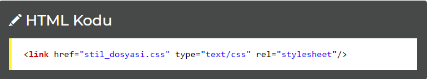
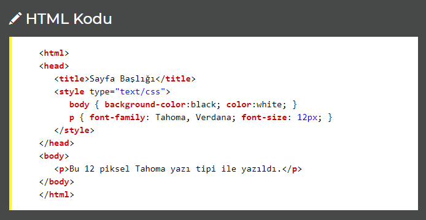
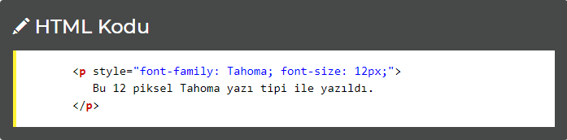

CSS Nasıl Eklenir?
Bir tarayıcı açıldığı zaman stilleri okur ve o stilin kullanıldığı HTML elementlerini belirtilen özelliklere göre şekillendirir.
Üç şekilde sayfamıza stil ekleyebiliriz. Bunlar:
Stilleri CSS Dosyasından Çağırmak
HTML Sayfasında CSS Yazmak
HTML Elementinin İçerisinde Stil Belirtmek
1. Stilleri CSS Dosyasından Çağırmak
Bir not defteri ya da CSS düzenleyici program açmalısınız.
CSS Kodlarınızı CSS Kod Yapısı'na uygun olarak yazın ve kaydedin.
HTML Sayfanızı açıp <head> ile </head> arasına aşağıdaki şekilde stil dosyanızın adını belirtin.

href="DOSYA_ADI" ile belirttiğimiz yerde bizim kaydettiğimiz dosyanın adı yer almalı ve HTML sayfası ile CSS dosyası aynı klasörde bulunmalıdır. Farklı bir klasörde kullanmak istiyorsak HTML sayfasına göre konumu yazmamız gereklidir.
Dosya adını doğru yazdıysak artık CSS dosyamızı HTML sayfamıza bağladık demektir. Yani CSS dosyamızdaki stilleri rahatlıkla HTML sayfamızda kullanabiliriz.
2. HTML Sayfasında CSS Yazmak
HTML sayfamızda HEAD elementlerinin arasında STYLE elementi kullanarak stiller yaratmamız mümkün. Aşağıdaki örneğe bakalım:
;
Örneğe baktığımızda <style type="text/css"> elementini HEAD elementi içinde açıp kapatıyor ve içine stillerimizi yazıyoruz. Böylelikle dosyamızda belirttiğimiz stiller dışarıdan bir dosyaya bağlı olmaksızın kullanılabilir olacaklar.
3. HTML Elementinin İçerisinde Stil Belirtmek
Bazen stil dosyası ya da STYLE elementi kullanmadan hızlı çözümler üretmek gerekebilir. Böyle durumlarda her elementin style="" özelliği kullanıma hazırdır. CSS kodlarını element içinde açacağımız STYLE özelliğine sıralarız. Örneğin;
;
Size tavsiye edeceğimiz kullanım yolu 1 numaralı maddede anlattığımız harici bir dosya kullanmanızdır.